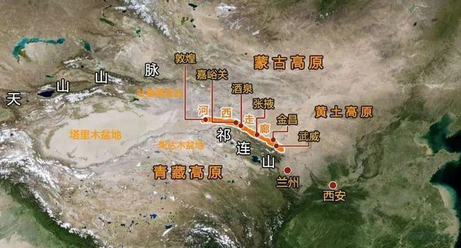

祁连山位于甘肃和青海境内，是两省的界山。古时匈奴称“天”为祁连，从河西走廊南望，陡峭高大的祁连山直插云霄。祁连山地处西北干旱区，北边是北山戈壁和巴丹吉林沙漠，南边有柴达木干旱盆地，西边是库姆塔格沙漠，东边有黄土高原，祁连山像是一座伸进西部干旱区的湿岛。在祁连山的庇护下，河西走廊形成一个个绿洲城市，并产生了东西方文明交流的通道——丝绸之路。
祁连山由多条西北东南走向的平行山脉和宽谷组成，包括野马山、托勒山、托勒南山、野马南山、疏勒南山、党河南山、土尔根达坂山和宗务隆山。祁连山西端在当金山口与阿尔金山脉相接，东端至黄河谷地，与秦岭、六盘山相连。山峰多海拔4000—6000米，山间谷地也在海拔3000—5000米之间。 这种地形和新疆境内的天山相似，天山同样由众多高山组成，山间有很多水草丰美的宽谷盆地。古时匈奴呼“天”为“祁连”，祁连山脉被匈奴人视为天山，从河西走廊向南望去，高耸陡峭的祁连山积雪覆盖，直插云端，与天相连。

河西走廊上有四个重郡，是为了当时抵抗长城以西以北的匈奴抢掠、劫杀丝绸之路的财物，以及滋扰边境人民所设立的。它们是武威、张掖、酒泉和敦煌，由东向西依次排列。
古代著名的丝绸之路，便是沿这里一路向西的，不过，这是后话—因为自商周时代起，水草丰茂的河西走廊，便是西北各游牧民族垂涎的风水宝地，战事频发。起先，月氏（音“肉之”）人与乌孙人共同栖居于此，但在战国时代，月氏人将乌孙人打跑，而到了西汉时期，北方崛起的匈奴人，又征服了月氏人，迫使他们西迁至大夏（今阿富汗地区）。从此，河西走廊并入了匈奴的势力范围。 公元前139年，因不堪匈奴对边境的常年袭扰，汉武帝决心联合与匈奴有不共戴天仇恨的月氏，共同讨伐。但在当时，西域与中原的版图就像一只葫芦，河西走廊便是那“葫芦腰”，出使西域，河西走廊是必经之路。于是，便有了张骞历尽艰险，两次穿越河西走廊，说服乌孙、大宛等西域诸国，联合征讨匈奴的故事。 公元前121年，霍去病率汉军剿平了盘踞河西走廊的匈奴人，而西域诸国也深惧大汉天威，就此臣服。占领了河西走廊后，汉武帝于此设立了武威、酒泉两郡，几年后又增设了张掖和敦煌两郡，始称“河西四郡”。